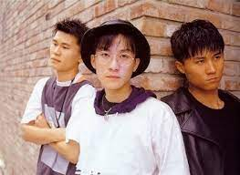
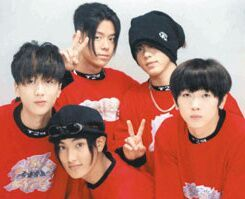
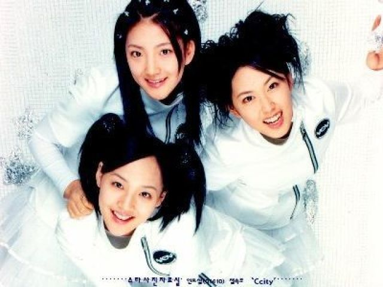
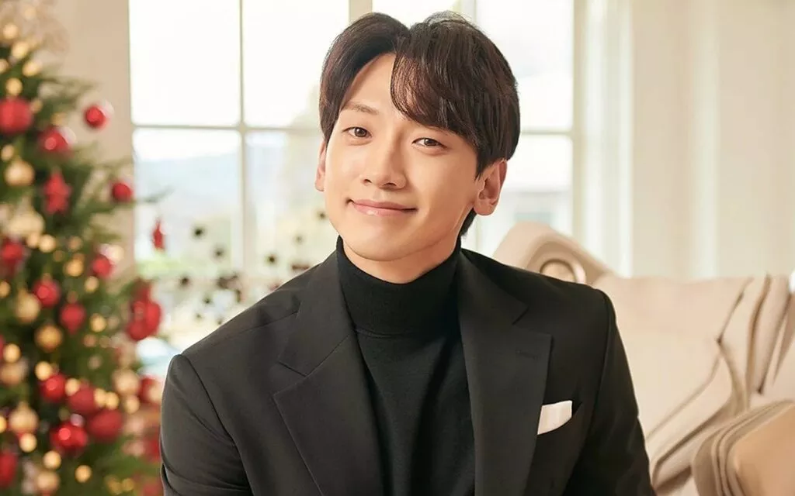

| Home | 1° geração | 2° geração | 3° geração | 4° geração | Extra:BTS |
|---|
A primeira geração do K-pop iniciou na década de 90, onde o estilo foi oficializado.
 O trio Seo Taiji and Boys teve seu debut(estreia) em 1992, e foi é conhecido por ser o primeiro grupo a ter relevancia histórica.Eles trouxeram influência latina nas suas músicas. Um dos membros,Yang Hyunsuk, é o fundador da YG uma das maiores empresas de k-pop. Os seus maiores sucessos foram I know e Come Back Home.

Esse quinteto foi formado pela SM Entertainment em 1996 e seus integrantes eram Lee Jae-won, Moon Hee-joon, Kangta, Tony ah, Jang Woo Hyuk. Seu maior sucesso sem dúvida foi Candy, música que até hoje tem muitos covers.

Esse grupo,também formado pela SM, debutou em 1997, como uma resposta feminina ao H.O.T. O grupo teve duas de suas músicas regravadas pelo Red Velvet(grupo da terceira geração), e, além disso, em 2017 gravaram a música Paradise para comemorar o 20° aniversário.

Em 1998, chegou a fazer parte do grupo Fanclub, porém seu sucesso começou com a carreira solo. Talvez você conheça ele do filmeNinja Assasino(2009).Seu maior sucesso foi Rainism, que já foi performada pelo BTS, clique aqui para ver
© Copyright Evy_Kelin